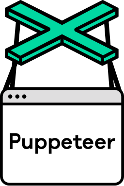
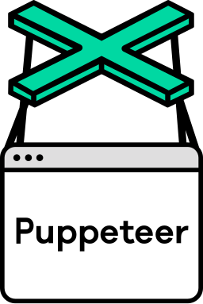

Extensão para Premiere Pro
Criei uma extensão em JavaScript que automatiza 80% do processo de edição de conteúdo reaproveitado. Reduzi o tempo de edição de 15 minutos para 1:40, triplicando a produção de vídeos mensais.
Saiba mais react
react typescript
typescript
App de Monitoramento de Lives
Desenvolvi um aplicativo em Google Apps Script integrado ao Google Sheets que monitora 20 lives simultâneas no YouTube, coleta métricas automáticas e alerta quando uma live não atinge 50k views em 48 horas.
Ver detalhes nodepuppeteer
nodepuppeteer
YouTube Competitors Analyser
Desenvolvi uma aplicação com **Node.js, Puppeteer, csv-writer** e outras bibliotecas que permite descobrir os concorrentes reais de um canal no YouTube. O sistema coleta dados estratégicos de vídeos e canais, como títulos, tags e número de visualizações, e gera uma lista de tags baseada na frequência e performance das mais utilizadas. Possui instalador próprio para Windows 11.
Ver detalhes